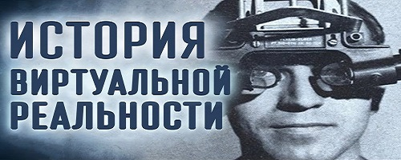

-

-
History
Слово виртуальный берет свои истоки от слова vir (лат. мужчина). Римляне образовали от него другое слово — virtus, которое использовали для обозначения совокупности всех превосходных качеств, присущих мужчинам (физическая сила, доблестное поведение, моральное достоинство). Такое же имя было у богини Виртус из древнеримской мифологии. Из латинского слово проникает в старофранцузский, а в XIII веке — из французского в английский. В английском слово virtual приобрело дополнительный оттенок «но не существующий в действительности»
Понятие «виртуал» появилось в ранневизантийской философии IV века. Василий Великий в книге «Беседы на шестоднев» написал: «Некая реальность может породить другую реальность, законы существования которой не будут сводиться к законам порождающей реальности»Виртуальная реальность вовсе не так же «полна искушений», как реальная. В виртуальной их куда как больше.
- Януш Леон Вишневский. "Одиночество в Сети"
В 1970-х годах компьютерная графика полностью заменила видеосъемку, до того использовавшуюся в симуляторах. Графика была крайне примитивной, однако важным было то, что тренажеры (это были симуляторы полетов) работали в режиме реального времени. Первой реализацией виртуальной реальности считается «Кинокарта Аспена» (Aspen Movie Map), созданная в Массачусетском Технологическом Институте в 1977 году. Эта компьютерная программа симулировала прогулку по городу Аспен, штат Колорадо, давая возможность выбрать между разными способами отображения местности. Летний и зимний варианты были основаны на реальных фотографиях. В середине 1980-х появились системы, в которых пользователь мог манипулировать с трехмерными объектами на экране благодаря их отклику на движения руки. В 1989 году Джарон Ланьер ввёл более популярный ныне термин «виртуальная реальность». В фантастической литературе поджанра киберпанк виртуальная реальность есть способ общения человека с «киберпространством» — некой средой взаимодействия людей и машин, создаваемой в компьютерных сетях. В данный момент технологии виртуальной реальности широко применяются в различных областях человеческой деятельности: проектировании и дизайне, добыче полезных ископаемых, военных технологиях, строительстве, тренажерах и симуляторах, маркетинге и рекламе, индустрии развлечений и т. д.Объём рынка технологий виртуальной реальности оценивается в 15 млрд долларов в год.
Обучение
Виртуальная реальность применяется для обучения профессиям, где эксплуатация реальных устройств и механизмов связана с повышенным риском либо связана с большими затратами (пилот самолёта, машинист поезда, диспетчер, водитель, горноспасатель и т. п.). Западный резервный университет Кейза дал согласие на внедрение технологии дополненной реальности от Microsoft в обучение студентов.Медицина
Виртуальная реальность способствовала развитию медицины, ведь в таких условиях можно было спокойно обучать новых медиков, не опасаясь за здоровье пациента. В некоторых случаях виртуальную реальности использовали для проведения так сказать предварительной операции, когда врач делал операцию в виртуальном мире и смотрел за своими ошибками, чтобы потом устранить их на практике. Также развитие ВР привело к тому, что операцию стали проводить с помощью роботов.Автомобилестроение
Производители автомобилей тоже используют виртуальную реальность для создания прототипов новых автомобилей, где они также тестируют свои образцы в разных условиях. Благодаря этому дизайнеры могут устранять выявившиеся недостатки автомобиля прямо на экране, не переделывая саму машину. Этот метод был значительно эффективнее всех других и менее дорогостоящим.Сфера развлечений
Сфера развлечений все больше обращается к мультимедийным технологиям, тем более что в мире давно экспериментируют с виртуальной реальностью. Виртуальные декорации — это панорамные мультиэкранные проекции виртуальных миров. Экраны воспринимаются зрителем как окна в другой мир. Располагать их можно по-разному. Всё зависит от возможностей площадки, желаний и возможностей заказчика. Виртуальные декорации могут не только заменять собой интерьер, но и дополнять его.
Types of tracking

Типы трекинга
Система трекинга для ВР представляет собой некую копию систем позиционирования и ориентации, существующих в природе. «Естественные» системы трекинга в реальном мире — органы чувств человека. Так, зрение помогает человеку определить, где он находится относительно других предметов и людей. Если же кто-то лишен способности видеть, то у него, чтобы ориентироваться в пространстве, включается слух. Летучим мышам и дельфинам ультразвук позволяет заметить мельчайшее препятствие и определить расстояние до него. Вероятно, многие слышали о терменвоксе — музыкальном инструменте, звуки которого зависят от того, каким образом нарушено стационарное электромагнитное поле между двумя пластинами. Если внести руку в поле терменвокса, то можно извлечь различные звуки. Их высота и тембр будут зависеть от положения руки в пространстве между пластинами. Это очень чувствительный инструмент, и далеко не каждый способен научиться играть на нем. На таком же принципе основан электромагнитный трекинг. В общем, сама природа подсказывает способы, которыми искусственно созданный виртуальный мир может ориентироваться в реальном. Для реализации трекинга применяются электромагнитные, ультразвуковые, инерционные и оптические системы. Оптический трекинг Виртуальный шлемРабота систем оптического трекинга основана на том же принципе, что и стереоскопическое зрение человека. Поскольку человек видит двумя глазами, он способен определить, на каком расстоянии находится объект и как он ориентирован. Мало создать систему трекинга для ВР, например установив пару камер, чтобы смоделировать стереоскопическое зрение человека. Нужно научить ее правильно определять расстояние до объекта и положение того в пространстве. Грудные дети, пытаясь взять предмет рукой, «калибруют» свое зрение, соотнося расположение предмета с вытянутой рукой. Итак, любую систему трекинга нужно настроить и откалибровать. Задача калибровки системы трекинга ВР — это установление взаимно однозначной связи между координатами в реальном и виртуальном мирах, чтобы человек мог взять виртуальный предмет своей рукой или реальным пинцетом. Если есть две камеры, то сначала нужно провести внутреннюю калибровку, т.е. установить зависимость между внешними размерами шаблона-маски и его образа на матрице камеры. После этого следует выполнить внешнюю калибровку, связав координатные системы (реальное местоположение) камер между собой, а затем с координатной системой виртуального мира (как правило, это координаты экрана, являющегося «окном» в ВР). Основной недостаток систем оптического трекинга — необходимость точной калибровки модулей приема оптического сигнала, иначе камер. Для работы такой системы обычно требуется два таких модуля или более, причем зона их взаимодействия должна находиться в области пересечения видимости камер. Чем обширнее зона взаимодействия, тем больше камер нужно установить и тем сложнее становится процедура калибровки. Но все же оптические системы трекинга применяются чаще остальных, поскольку они более надежны и относительно недороги. В таких системах используется специальная камера, которая отслеживает местонахождение реального объекта с нанесенными оптическими маркерами (как правило, это пространственная структура из четырех и более маркеров), снимает сигнал при перемещении и передает полученную информацию на компьютер. Ведущие западные компании делают системы оптического трекинга на базе минимум двух камер, в то время как в России создана система с использованием лишь одной независимой камеры. Достоинства отечественной разработки очевидны.
- Стоимость одной камеры в 2 раза меньше, чем двух.
- Увеличивается область трекинга, так как рабочей зоной становится зона видимости одной камеры, а не пересечения зон видимости нескольких камер.
- Рабочую зону можно существенно расширить, добавив независимые камеры.
- Упрощается процедура настройки и калибровки системы, что дает существенные преимущества при установке мобильных и полномасштабных систем виртуальной реальности. Каждая система трекинга имеет свои плюсы и минусы. Наравне с оптической зачастую применяются системы звукового и электромагнитного трекинга. Звуковой трекинг Для звукового трекинга используется звук высокой частоты. Существуют два вида такой системы трекинга: по времени прохождения сигнала и по разности фаз сигнала. В системе трекинга по времени прохождения сигнала передатчики расположены на движущемся реальном объекте. Всякий раз, когда передатчик посылает сигнал, его принимают статичные сенсоры, измеряющие время между отправлением и приемом сигнала. А поскольку сенсоров много и каждый из них определяет время прохождения сигнала от передатчика, то, значит, можно получить целостную трехмерную картину перемещения объекта в системе. Ориентация объекта (направление движения) определяется с помощью кластера из трех сенсоров. Недостаток трекинга такого типа — низкая скорость звуковой волны, а также снижение эффективности работы из-за воздействия температуры, давления и влажности. Для системы трекинга, основанной на разности фаз сигнала, также необходимы два передатчика: один — на движущемся объекте, другой — в контрольной точке. Оба они испускают звуковые волны с разными фазами. Эти волны измеряются в реальном времени по шкале в 360°, что соответствует разнице в одну длину волны. По полученным данным вычерчивают кривую движения объекта. Пока расстояние, которое движущийся объект проходит за время считывания сигналов меньше, чем одна длина волны, система успевает отследить его перемещение в пространстве. Основной недостаток звукового трекинга по разности фаз заключается в том, что известна не абсолютная позиция объекта, а лишь периодические изменения его местоположения в отдельные промежутки времени. Электромагнитный трекинг При электромагнитном трекинге измеряется сила магнитного поля. Магнитное поле возникает в результате пропускания тока через три электромагнитные катушки, расположенные перпендикулярно друг другу. Эти катушки должны находиться в маленьком корпусе, закрепленном на движущемся объекте, положение которого нужно отслеживать. Ток, последовательно проходящий через катушки, превращает их в электромагниты, что позволяет определить их позицию и ориентацию в пространстве. Такая система плохо работает вблизи любых металлических объектов и устройств, способных повлиять на электромагнитное поле. На базе этой технологии создано устройство SpaceGrips, а также различные модификации виртуальных перчаток. Для их качественной работы требуется специально оборудованное помещение, но и тогда систему необходимо заново калибровать практически ежемесячно. Если оснастить системой трекинга, например оптическими маркерами или электромагнитным датчиком, обычный джойстик или другое устройство взаимодействия с компьютером, то получится устройство управления ВР. Как правило, разработки компаний в этой области направлены на то, чтобы комплектовать стандартные устройства управления системой трекинга. * * * В настоящее время многие компании, в том числе A.R.T., InterSense, WorldViz, PhoeniX Technologies, Ascension, PhaseSpace, EligoVision, занимаются разработкой систем оптического трекинга. Также существуют фирмы, создающие технологии электромагнитного (Polhemus), ультразвукового и инерционного трекинга.
Contact info:
Tel.: +7 (499) 677-55-92
E-mail: 2ral.com
Adress: Москва, м.Кантемировская (склад) 54
Skype: SPB_Az
How to find us:
Have something to say?
- Главная
-
История
Виртуальная реальность в книгах
-
Разработчики
-
Применения
- Типы трекинга
-
Контакты
{kind=link}
{kind=link}
{kind=link}
{kind=link}
{kind=link}
{kind=link}
{kind=link}
Leave a comment: